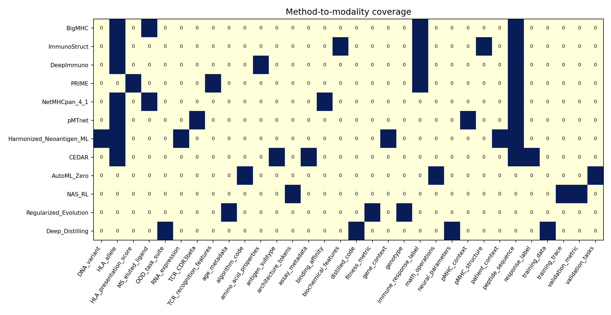
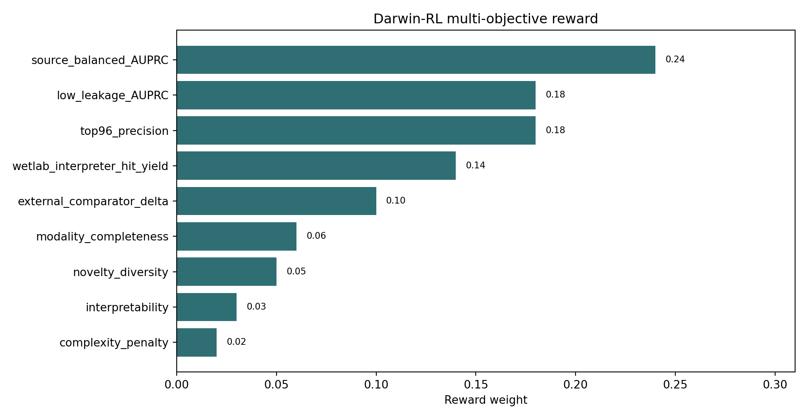
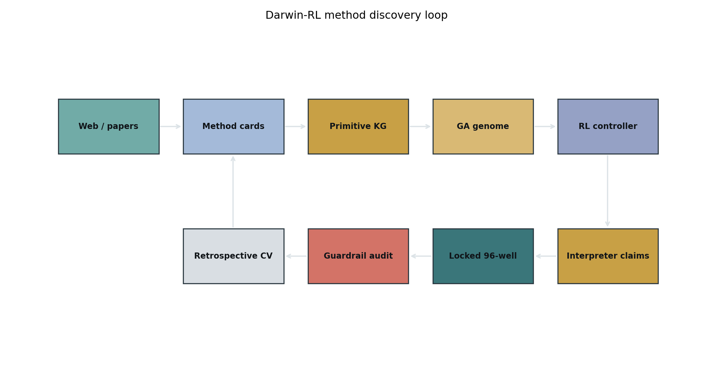
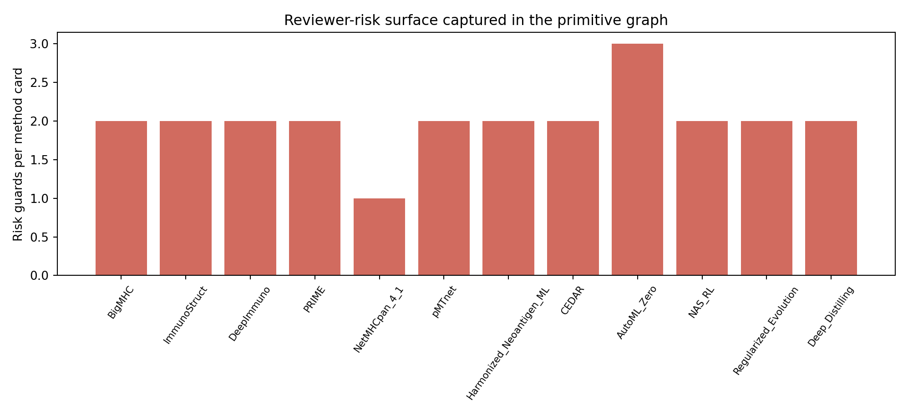
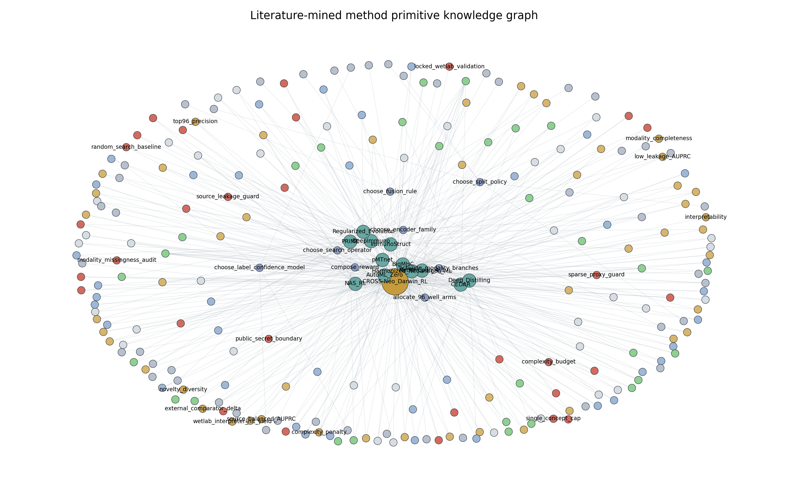

01Summary
This is the next algorithm concept: not a weighted ensemble, but a literature-mined method graph with GA/RL search over preprocessing, modality, architecture, fusion and assay-validation choices.
02Figures





03Source Method Cards
| method | domain | source_type | source_url | paper_anchor | core_primitives | preprocessing_primitives | modalities | search_gene | risk_guard |
|---|---|---|---|---|---|---|---|---|---|
| BigMHC | neoantigen_immunogenicity | biomedical_ai | https://doi.org/10.1038/s42256-023-00694-6 | Nature Machine Intelligence 2023 | MS_EL_pretraining;immunogenicity_transfer_learning;seven_model_ensemble;pan_allelic_peptide_HLA_encoder | class_I_filter;8_15mer_peptide_filter;HLA_normalization;EL_random_negative_design | peptide_sequence;HLA_allele;MS_eluted_ligand;immune_response_label | two_stage_EL_to_IM_transfer;public_prior_score;ensemble_diversity_weight | training_overlap_audit;public_tool_dependency_boundary |
| ImmunoStruct | neoantigen_immunogenicity | biomedical_ai | https://www.nature.com/articles/s42256-025-01163-y | Nature Machine Intelligence 2025 | multimodal_sequence_structure_biochemistry;interpretable_pMHC_features;multi_allele_class_I_prediction | pMHC_structure_standardization;biochemical_descriptor_generation;allele_stratified_split | peptide_sequence;HLA_allele;pMHC_structure;biochemical_features;immune_response_label | structure_branch;biochemistry_branch;late_fusion_attention;structure_uncertainty_gate | structure_availability_bias;allele_coverage_check |
| DeepImmuno | neoantigen_immunogenicity | biomedical_ai | https://pmc.ncbi.nlm.nih.gov/articles/PMC7781330/ | Frontiers Immunology 2021 | CNN_immunogenicity_model;physiochemical_aware_encoding;top_k_sensitivity_benchmark | beta_binomial_response_confidence;HLA_peptide_pair_encoding;low_confidence_label_filter | peptide_sequence;HLA_allele;amino_acid_properties;immune_response_label | AA_property_channel;confidence_weighted_label;small_CNN_branch;top_k_reward | small_data_overfit_check;threshold_sensitivity_audit |
| PRIME | neoantigen_immunogenicity | biomedical_ai | https://www.sciencedirect.com/science/article/pii/S2666379121000057 | Cell Reports Medicine 2021 | presentation_plus_TCR_recognition_propensity;TCR_recognition_determinants;immunoediting_signal | TCR_facing_residue_features;presentation_rank_features;neoepitope_label_harmonization | peptide_sequence;HLA_presentation_score;TCR_recognition_features;immune_response_label | TCR_propensity_branch;TCR_facing_position_mask;immunoediting_prior | non_tumor_training_boundary;label_context_check |
| NetMHCpan_4_1 | antigen_presentation | biomedical_ai | https://doi.org/10.1093/nar/gkaa379 | Nucleic Acids Research 2020 | motif_deconvolution;binding_affinity_plus_EL_integration;pan_specific_MHC_prediction | allele_resolution_normalization;peptide_length_windows;MS_EL_and_BA_label_merge | peptide_sequence;HLA_allele;binding_affinity;MS_eluted_ligand | presentation_gate;motif_deconvolution_prior;BA_EL_dual_score | presentation_not_immunogenicity_boundary |
| pMTnet | TCR_pMHC_recognition | biomedical_ai | https://www.nature.com/articles/s42256-021-00383-2 | Nature Machine Intelligence 2021 | transfer_learning_TCR_pMHC;CDR3beta_peptide_HLA_input;pairing_specificity_prediction | CDR3beta_normalization;peptide_HLA_pairing;TCR_pair_availability_gate | TCR_CDR3beta;peptide_sequence;HLA_allele;pMHC_context | TCR_expert_branch;TCR_missingness_policy;pairing_affinity_gate | TCR_sparse_proxy_guard;HLA_A02_bias_check |
| Harmonized_Neoantigen_ML | patient_level_neoantigen_selection | biomedical_dataset_method | https://doi.org/10.1016/j.immuni.2023.09.002 | Immunity 2023 | WES_RNA_reprocessing;presentation_hotspots;binding_promiscuity;oncogenicity_context | matched_WES_RNA_harmonization;patient_cohort_split;SNV_to_neopeptide_expansion;expression_filter | DNA_variant;RNA_expression;peptide_sequence;HLA_allele;gene_context;patient_context | expression_gate;hotspot_feature;binding_promiscuity_feature;oncogenicity_prior | patient_level_leakage_guard;cohort_generalization_split |
| CEDAR | curated_cancer_epitope_data | biomedical_database | https://pmc.ncbi.nlm.nih.gov/articles/PMC9825495/ | Nucleic Acids Research 2023 | curated_cancer_epitope_labels;antigen_subtype_taxonomy;assay_metadata | neoantigen_viral_self_other_taxonomy;assay_type_filter;full_HLA_resolution_filter | peptide_sequence;HLA_allele;assay_metadata;antigen_subtype;response_label | label_provenance_node;assay_confidence_weight;antigen_subtype_gate | publication_overlap_audit;assay_context_stratification |
| AutoML_Zero | ai_algorithm_discovery | ai_method | https://arxiv.org/abs/2003.03384 | ICML 2020 | evolve_learning_algorithms_from_math_ops;low_human_bias_search;emergent_regularization | primitive_operation_library;task_suite_curriculum;program_safety_checks | algorithm_code;math_operations;validation_tasks | program_tree_gene;loss_function_gene;optimizer_gene;regularizer_gene | compute_budget_cap;invalid_program_rejection;complexity_penalty |
| NAS_RL | ai_architecture_search | ai_method | https://research.google/pubs/neural-architecture-search-with-reinforcement-learning/ | ICLR 2017 | RNN_controller_generates_architecture;validation_reward;policy_gradient_search | architecture_tokenization;child_model_training_budget;reward_normalization | architecture_tokens;validation_metric;training_trace | RL_controller_action;mutation_policy_learning;reward_shaping | validation_overfit_guard;early_stop_fidelity_check |
| Regularized_Evolution | ai_architecture_search | ai_method | https://arxiv.org/abs/1802.01548 | AAAI 2019 | aging_evolution;tournament_selection;architecture_mutation;limited_compute_efficiency | population_initialization;age_tracking;fitness_cache | genotype;fitness_metric;age_metadata | aging_selection;diversity_preserving_mutation;fitness_cache_reuse | random_search_baseline;search_cost_reporting |
| Deep_Distilling | ai_algorithm_discovery | ai_method | https://www.nature.com/articles/s43588-024-00593-9 | Nature Computational Science 2024 | distill_neural_solution_to_code;symbolic_essence_network;human_comprehensible_algorithm | task_trace_generation;symbolic_program_extraction;OOD_generalization_test | training_data;neural_parameters;distilled_code;OOD_task_suite | distill_to_interpretable_rule;posthoc_code_simplification;OOD_reward | equivalence_test;overcompression_failure_check |
04RL/GA Action Space
| action_family | action | choices | borrowed_from | rl_state_dependency | guardrail |
|---|---|---|---|---|---|
| preprocessing | choose_label_confidence_model | binary;beta_binomial;assay_weighted;patient_weighted | DeepImmuno;CEDAR | assay metadata completeness, replicate count, source label noise | no label-confidence feature may encode source-only positives |
| preprocessing | choose_split_policy | source_holdout;patient_holdout;HLA_holdout;peptide_cluster_holdout;low_leakage_holdout | Harmonized_Neoantigen_ML;AutoML_review | source imbalance, HLA skew, duplicate peptide/HLA pairs | all score claims report source and leakage split |
| modality | activate_modality_branches | sequence;HLA;MS_EL;RNA_expression;TCR;structure;biochemistry;gene_context;assay_metadata | BigMHC;ImmunoStruct;pMTnet;Harmonized_Neoantigen_ML | candidate has modality available, missingness pattern, wetlab budget | missing modality branch must have explicit missingness policy |
| encoder | choose_encoder_family | tabular_GBDT;small_CNN;LSTM;transformer;protein_LM_embedding;structure_GNN;late_fusion_MLP | BigMHC;DeepImmuno;ImmunoStruct;pMTnet | sample size, modality count, HLA diversity, compute budget | deep encoder requires nested validation and calibration check |
| fusion | choose_fusion_rule | weighted_sum;mixture_of_experts;late_attention;rank_aggregation;claim_safe_cap;Pareto_front | BigMHC ensemble;CROSS-Neo;AutoML | comparator disagreement, failure mode, claim layer | single-concept dominance cap |
| search | choose_search_operator | aging_evolution;mutation;cross_over;RL_policy_mutation;Bayesian_local_search;random_baseline | Regularized_Evolution;NAS_RL;AutoML_Zero | search stagnation, diversity, compute budget | random search and fixed ensemble baselines always reported |
| reward | compose_reward | AUPRC;source_balanced_AUPRC;low_leakage_AUPRC;top96_precision;wetlab_hit_yield;complexity_penalty;novelty_bonus | AutoML_review;CROSS-Neo v6;Deep_Distilling | train/validation split, assay objective, product claim boundary | reward must include at least one leakage-resistant metric |
| wetlab | allocate_96_well_arms | clean_discovery;TCR_MD_mechanism;label_rescue;specificity_moat;positive_QC;model_boundary | CROSS-Neo v6 interpreter | model uncertainty, comparator disagreement, claim blocker | every claimed hit needs matched control route |
05Reward
| reward_component | weight | purpose |
|---|---|---|
| source_balanced_AUPRC | 0.240 | prevents CEDAR/TESLA/source dominance |
| low_leakage_AUPRC | 0.180 | rewards clean generalization |
| top96_precision | 0.180 | matches 96-well wetlab yield |
| wetlab_interpreter_hit_yield | 0.140 | direct assay utility after v6 |
| external_comparator_delta | 0.100 | must beat or complement BigMHC/PRIME/NetMHCpan |
| modality_completeness | 0.060 | penalizes impossible candidates |
| novelty_diversity | 0.050 | prevents copying one public model |
| interpretability | 0.030 | supports reviewer defense |
| complexity_penalty | 0.020 | keeps deployable search |
06Guardrails
| guardrail | rule |
|---|---|
| public_secret_boundary | Use public papers/code/features only; no proprietary extraction. |
| source_leakage_guard | Patient/source/HLA/peptide-cluster splits are separate required reports. |
| sparse_proxy_guard | Sparse features such as TCR availability cannot dominate without ablation. |
| single_concept_cap | No primitive family can exceed a prespecified weight cap in claim-safe mode. |
| random_search_baseline | GA/RL gains must beat fixed ensemble and random search under same budget. |
| locked_wetlab_validation | Prospective claims require locked score before v6 wetlab results. |
| modality_missingness_audit | Every modality branch needs missingness and availability stratification. |
| complexity_budget | Report search generations, population, model count and CPU/GPU budget. |
07Primitive Library
| primitive_type | primitive | n_methods |
|---|---|---|
| core_primitives | CDR3beta_peptide_HLA_input | 1 |
| core_primitives | CNN_immunogenicity_model | 1 |
| core_primitives | MS_EL_pretraining | 1 |
| core_primitives | RNN_controller_generates_architecture | 1 |
| core_primitives | TCR_recognition_determinants | 1 |
| core_primitives | WES_RNA_reprocessing | 1 |
| core_primitives | aging_evolution | 1 |
| core_primitives | antigen_subtype_taxonomy | 1 |
| core_primitives | architecture_mutation | 1 |
| core_primitives | assay_metadata | 1 |
| core_primitives | binding_affinity_plus_EL_integration | 1 |
| core_primitives | binding_promiscuity | 1 |
| core_primitives | curated_cancer_epitope_labels | 1 |
| core_primitives | distill_neural_solution_to_code | 1 |
| core_primitives | emergent_regularization | 1 |
| core_primitives | evolve_learning_algorithms_from_math_ops | 1 |
| core_primitives | human_comprehensible_algorithm | 1 |
| core_primitives | immunoediting_signal | 1 |
| core_primitives | immunogenicity_transfer_learning | 1 |
| core_primitives | interpretable_pMHC_features | 1 |
| core_primitives | limited_compute_efficiency | 1 |
| core_primitives | low_human_bias_search | 1 |
| core_primitives | motif_deconvolution | 1 |
| core_primitives | multi_allele_class_I_prediction | 1 |
| core_primitives | multimodal_sequence_structure_biochemistry | 1 |
| core_primitives | oncogenicity_context | 1 |
| core_primitives | pairing_specificity_prediction | 1 |
| core_primitives | pan_allelic_peptide_HLA_encoder | 1 |
| core_primitives | pan_specific_MHC_prediction | 1 |
| core_primitives | physiochemical_aware_encoding | 1 |
| core_primitives | policy_gradient_search | 1 |
| core_primitives | presentation_hotspots | 1 |
| core_primitives | presentation_plus_TCR_recognition_propensity | 1 |
| core_primitives | seven_model_ensemble | 1 |
| core_primitives | symbolic_essence_network | 1 |
| core_primitives | top_k_sensitivity_benchmark | 1 |
| core_primitives | tournament_selection | 1 |
| core_primitives | transfer_learning_TCR_pMHC | 1 |
| core_primitives | validation_reward | 1 |
| modalities | peptide_sequence | 8 |
| modalities | HLA_allele | 7 |
| modalities | immune_response_label | 4 |
| modalities | MS_eluted_ligand | 2 |
| modalities | DNA_variant | 1 |
| modalities | HLA_presentation_score | 1 |
| modalities | OOD_task_suite | 1 |
| modalities | RNA_expression | 1 |
| modalities | TCR_CDR3beta | 1 |
| modalities | TCR_recognition_features | 1 |
| modalities | age_metadata | 1 |
| modalities | algorithm_code | 1 |
| modalities | amino_acid_properties | 1 |
| modalities | antigen_subtype | 1 |
| modalities | architecture_tokens | 1 |
| modalities | assay_metadata | 1 |
| modalities | binding_affinity | 1 |
| modalities | biochemical_features | 1 |
| modalities | distilled_code | 1 |
| modalities | fitness_metric | 1 |
| modalities | gene_context | 1 |
| modalities | genotype | 1 |
| modalities | math_operations | 1 |
| modalities | neural_parameters | 1 |
| modalities | pMHC_context | 1 |
| modalities | pMHC_structure | 1 |
| modalities | patient_context | 1 |
| modalities | response_label | 1 |
| modalities | training_data | 1 |
| modalities | training_trace | 1 |
| modalities | validation_metric | 1 |
| modalities | validation_tasks | 1 |
| preprocessing_primitives | 8_15mer_peptide_filter | 1 |
| preprocessing_primitives | CDR3beta_normalization | 1 |
| preprocessing_primitives | EL_random_negative_design | 1 |
| preprocessing_primitives | HLA_normalization | 1 |
| preprocessing_primitives | HLA_peptide_pair_encoding | 1 |
| preprocessing_primitives | MS_EL_and_BA_label_merge | 1 |
| preprocessing_primitives | OOD_generalization_test | 1 |
| preprocessing_primitives | SNV_to_neopeptide_expansion | 1 |
| preprocessing_primitives | TCR_facing_residue_features | 1 |